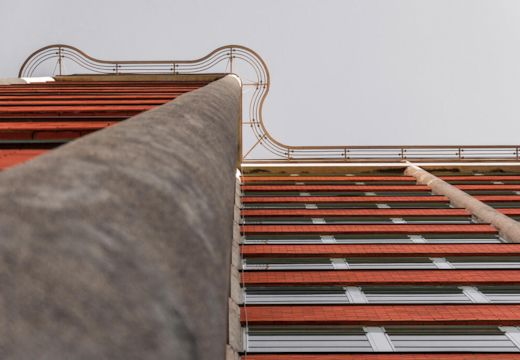
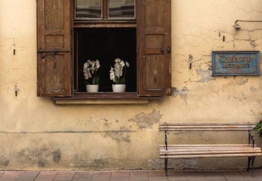
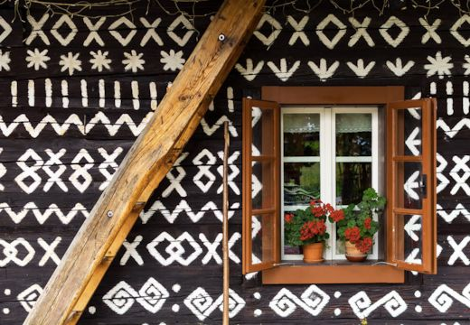
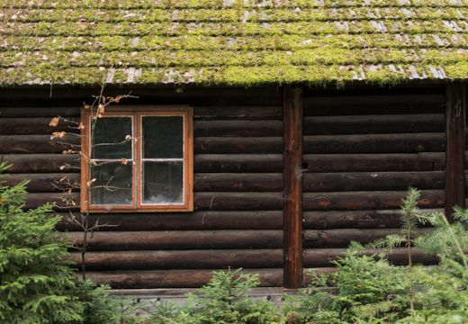
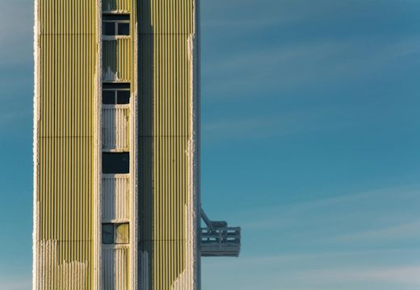

My Gallery
Architecture
Windows
Windows

bata-house.jpg

bench-andl-window-on-italian-street.jpg
brick-factory-house-pattern.jpg
church-windows.jpg

cicmany-village.jpg

forest-log.jpg
granary.jpg
minimalism-in-architecture.jpg

minimalist-tall-house-balcony.jpg
old-city-house-facade.jpg